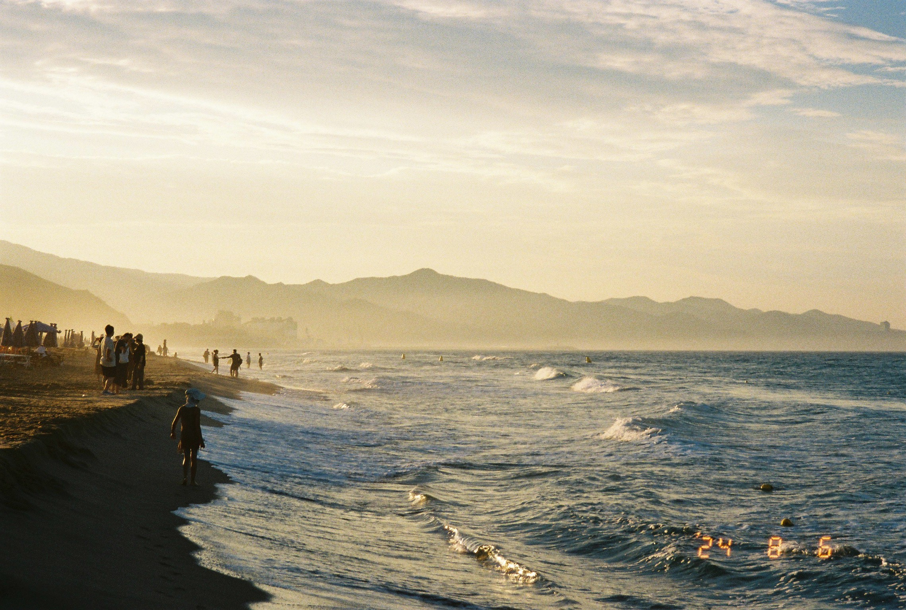
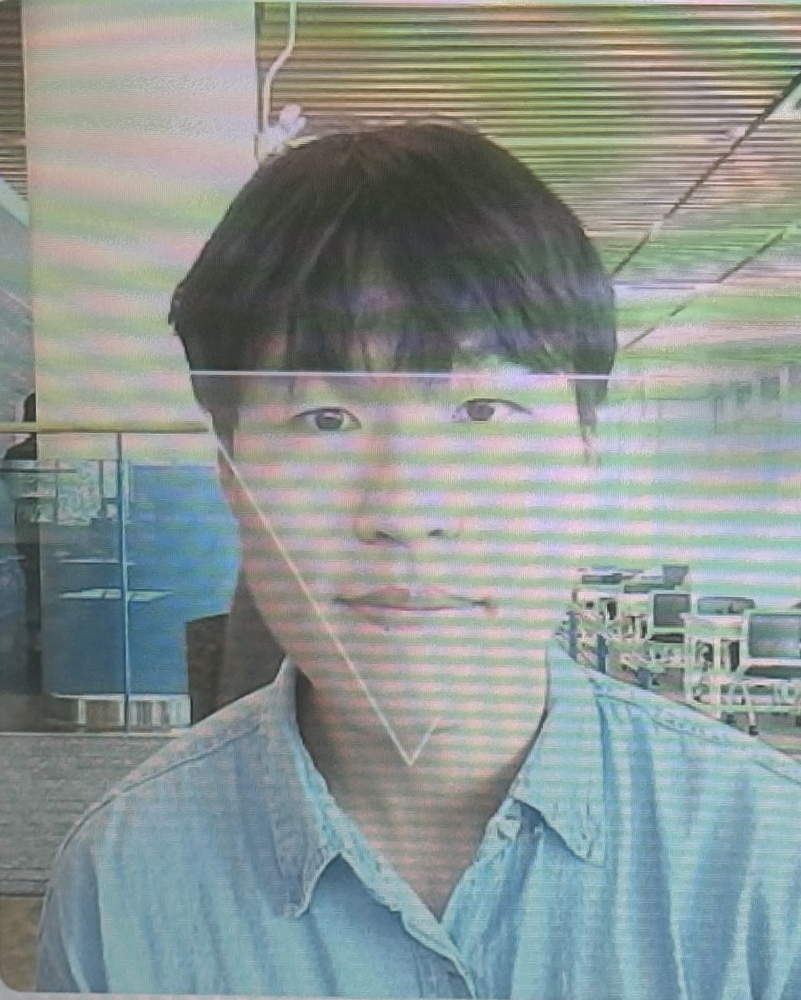
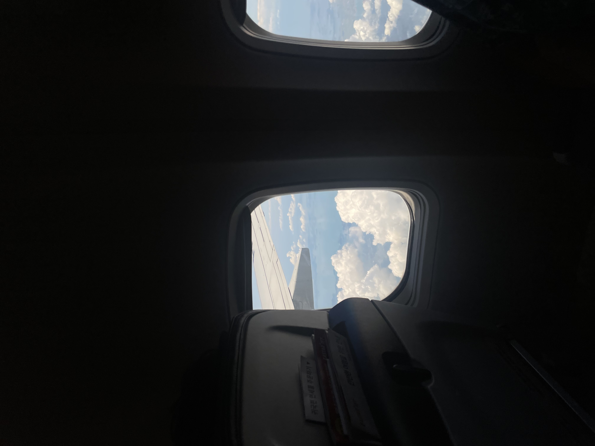
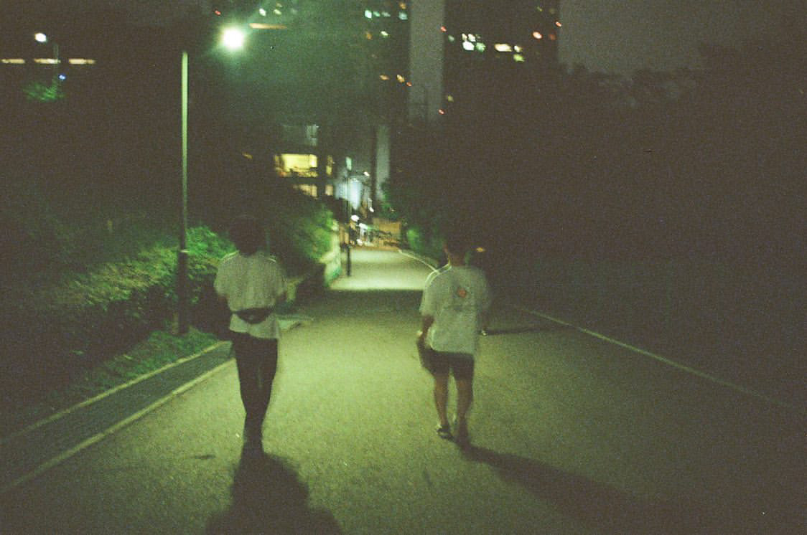

Artist Statement
아직은 전문 사진가라고 하기엔 미흡한 실력이지만, 사진을 통해 일상을 값지게 기록하고자 합니다.
기록의 목적은 ‘증명’보다는 ‘회상’에 가깝습니다. 함께했던 순간들, 소중한 사람들과의 일상을 언제든지 추억할 수 있게 좋은 사진을 남기고 싶습니다.
Selected Works
전체 아카이브 보기 →


Exhibitions & Projects
-
2025
“아직 성장 중”
군사경찰 아일릿, 복학, 개인 아카이브 제작.
-
2024
“In airforce”
공군 제17전투비행단에서 군사경찰 직무로 복무.
-
2023
“의식의 흐름대로”
아직 미정.